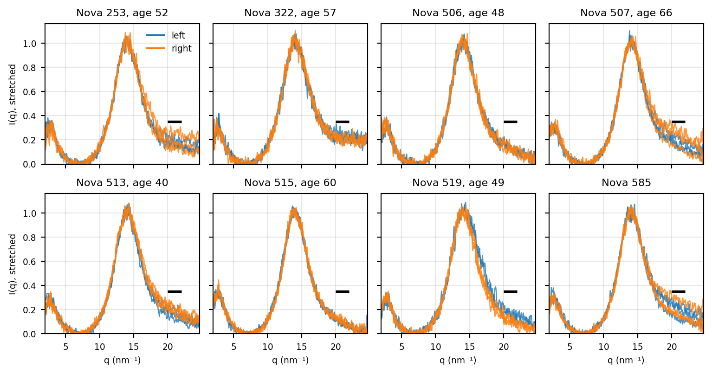

The rule of Appendix C compares a patient only if both breasts have a usable scan. A breast with no usable scan is not mismeasured; it is left out because every spot the beam hit was fat. Many of these breasts are genuinely NORMAL, and being too fatty to measure is itself a result: that breast has little water. This section looks at those breasts, and at what happens if the test counts them as the fattier breast instead of leaving the patient out.
E.1 Who has no usable scan
Breasts with no usable scan, by label:
Label
Breasts
No usable scan
NORMAL
138
68 (49%)
BENIGN
224
88 (39%)
CANCER
76
33 (43%)
And patients by how many of their breasts have a usable scan:
Patients
All
Both breasts usable
One
Neither
CANCER vs NORMAL
38
18
5
15 (39%)
BENIGN vs NORMAL
52
27
6
19 (37%)
CANCER vs BENIGN
24
5
9
10 (42%)
NORMAL vs NORMAL
10
2
0
8 (80%)
Of the 10 patients with two NORMAL breasts, 8 have no usable scan in either breast, so the rule never sees them (Figure E.1). These are the most typical healthy patients in the study, and their breasts are fatty all the way through.
Code
SIDE_COLOURS = {"LEFT": "tab:blue", "RIGHT": "tab:orange"}curves = [curve for n in nn_neither for side in ("LEFT", "RIGHT") for curve, _ in breast_scans[n, side]]covered = np.flatnonzero(np.isfinite(np.vstack(curves)).all(axis=0))columns =slice(covered[0], covered[-1] +1)y_top =1.05* np.nanmax(np.vstack(curves)[:, columns])plt.rcParams["font.size"] =7n_cols =4n_rows =int(np.ceil(len(nn_neither) / n_cols))fig, axes = plt.subplots(n_rows, n_cols, figsize=(8, 2.1* n_rows), sharex=True, sharey=True, squeeze=False)for ax, nova inzip(axes.flat, nn_neither):for side, colour in SIDE_COLOURS.items():for curve, _ in breast_scans[nova, side]: ax.plot(q[columns], curve[columns], color=colour, lw=0.9, alpha=0.8) ax.hlines(WATER_MIN, *WATER, color="black", lw=2) age =f", age {nova_age[nova]:.0f}"if nova in nova_age else"" ax.set_title(f"Nova {nova}{age}") ax.set(xlim=(2, q[columns][-1]), ylim=(0, y_top)) ax.grid(alpha=0.3)for ax in axes.flat[len(nn_neither):]: ax.axis("off")for ax in axes[-1]: ax.set_xlabel("q (nm⁻¹)")for ax in axes[:, 0]: ax.set_ylabel("I(q), stretched")axes[0, 0].legend(handles=[Line2D([], [], color=c, label=s.lower()) for s, c in SIDE_COLOURS.items()], frameon=False, loc="upper right")fig.tight_layout()plt.show()plt.rcParams["font.size"] =10

Figure E.1: The NORMAL/NORMAL patients in which neither breast has a usable scan. Each panel is one patient: every prepared scan of the left (blue) and right (orange) breast, with the usable-scan water threshold over q 20–22 (black bar). The water peak never reaches the threshold.
E.2 Counting a fatty breast as a result
If a breast has no usable scan, the test can treat it as the fattier breast of the pair instead of dropping the patient. A patient whose two breasts both have no usable scan is still left out: there is nothing to tell them apart.
Comparison
Both breasts usable
Counting a breast with no usable scan as the fattier
CANCER vs NORMAL
15/18 (83%), p = 0.008
18/23 (78%), p = 0.011
BENIGN vs NORMAL
10/27 (37%), p = 0.248
11/33 (33%), p = 0.080
CANCER vs BENIGN
2/5 (40%), p = 1.000
8/14 (57%), p = 0.791
For CANCER vs NORMAL this adds the patients where only the CANCER breast has a usable scan, which count as right, and those where only the NORMAL breast has one, which count as wrong. The first kind outnumber the second, so more patients are compared with about the same strength of evidence. For BENIGN vs NORMAL it goes the other way: more often it is the BENIGN breast that has no usable scan, and the result falls further below chance. Most of the patients the rule drops are not lost wins, as in most of them both breasts are fatty.
Having two fatty breasts is much more common in NORMAL/NORMAL patients (80%) than in any other kind of patient (37–42%). So “too fatty to measure in both breasts” leans towards a healthy patient. NORMAL/NORMAL patients are older, though (median age 54 against 49 for the other patients), and fatty breasts are common with age, so this may be age as much as health. With only 10 NORMAL/NORMAL patients it is a hint, not a result.